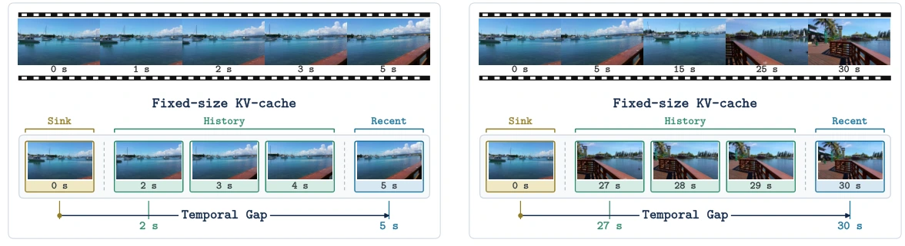
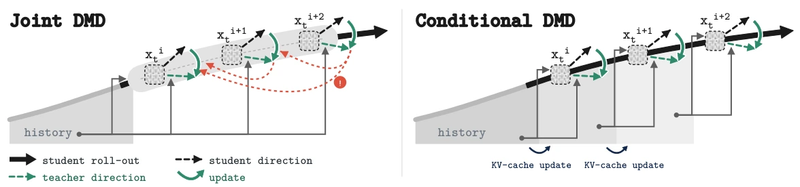
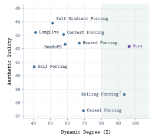
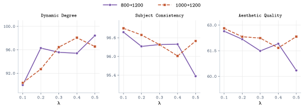

Train with long histories
An early sink and increasingly distant recent context share the same bounded cache. The teacher learns to continue from these long-range conditioning states.
Long-Horizon Autoregressive Video Generation
Learning to continue an evolving scene,
with a fixed memory budget.
01 / METHOD
Long videos change the history a model must condition on. Conditional Forcing trains for that changing history, then distills the next transition under the student’s own rollout.
An early sink and increasingly distant recent context share the same bounded cache. The teacher learns to continue from these long-range conditioning states.
Sample a split in a long video. Prefill its prefix in parallel, then train on a fixed-length continuation: one forward pass for each stage.
Evaluate each chunk under the updated student history, aligning its conditional continuation with the teacher as the rollout evolves.


02 / COMPARISONS
Compare complete rollouts side by side, with the same prompt and seed within each example.
03 / RESULTS
Subject consistency, dynamic degree, and aesthetic quality from the paper’s main evaluation.
30-SECOND ROLLOUTS
Conditional Forcing reaches a Dynamic Degree of 96.30 while retaining an Aesthetic Quality score of 62.17 in the 30-second evaluation.
The measurements capture complementary properties: motion alone does not establish visual quality.

| Method | 30 seconds | 60 seconds | ||||
|---|---|---|---|---|---|---|
| Subject | Dynamic | Aesthetic | Subject | Dynamic | Aesthetic | |
| Self Forcing | 97.43 | 40.42 | 60.66 | 97.27 | 44.21 | 56.58 |
| Causal Forcing | 96.10 | 69.38 | 57.41 | 95.96 | 59.86 | 51.83 |
| LongLive | 98.03 | 41.25 | 63.21 | 98.40 | 37.04 | 62.23 |
| Reward Forcing | 97.26 | 66.98 | 62.42 | 97.29 | 80.23 | 62.08 |
| MemRoPE | 97.28 | 58.62 | 62.33 | 97.48 | 56.20 | 59.34 |
| Rolling Forcing† | 96.04 | 93.44 | 58.61 | 95.81 | 95.69 | 56.75 |
| Self Gradient Forcing | 98.19 | 51.30 | 63.90 | 98.42 | 53.06 | 64.09 |
| Context Forcing | 97.72 | 57.71 | 63.05 | 98.17 | 52.69 | 62.10 |
| Conditional Forcing (Ours) | 96.32 | 96.30 | 62.17 | 96.43 | 97.36 | 61.48 |
Values from Table 1 of the paper, on a 0–100 scale. 30s uses MovieGen 128; 60s uses VBench’s official dimension-specific subsets. The two durations use different prompt sets. Rolling Forcing† denotes the rolling Causal Forcing variant used in the experiments.
We sweep λ from 0.1 to 0.5 for two schedules: 800→1200 and 1000→1200. Each reaches the same final step; the schedules apply VCD for 400 and 200 steps, respectively.

Displayed examples use 800→1200, λ=0.2. These results support separate comparisons for the two schedules; larger λ does not uniformly improve all metrics.
04 / VIDEO GALLERY
Explore people, animals, imagined worlds, and changing viewpoints across 30- and 60-second generations.
Videos play automatically while in view. Use the controls to pause or explore a moment, and expand each original prompt below. These are selected qualitative examples; the table above reports aggregate evaluation.